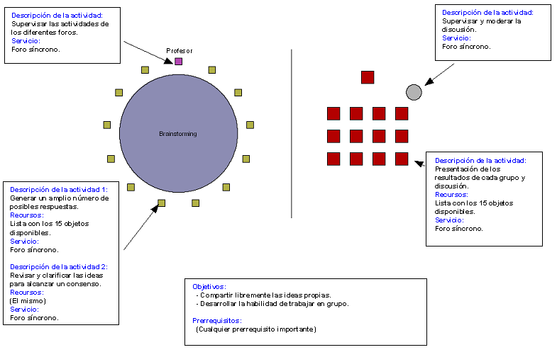

“Sois miembros de un equipo científico destinado a una
estación de investigación permanente en la superficie de
la Luna. Desafortunadamente, vuestra name lunar se avería,
forzando a realizar un aterrizaje de emergencia en Mare Crisium, a una
distancia de aprozimadamente 300 km de la estación, situada en
Mare Serenitatis. Tanto la estación como el lugar del aterrizaje
forzoso se encuentran en la cara iluminada de la Luna. Durante el
aterrizaje, gran parte del equipo de abordo ha sido dañado; la
supervivencia depende de alcanzar la estación de
investigación, pero sólo los objetos más
importantes pueden ser llevados en el viaje. A continuación
podéis encontrar una lista de los 15 objetos que no fueron
dañados en el aterrizaje. Deberéis alcanzar un consenso
en grupo acerca de la importancia relativa de estos objetos con el
objetivo de llegar a la estación de investigación."
[De The Sourcebook for teaching science. Estrategias, Actividades y Recursos de Internet.]
